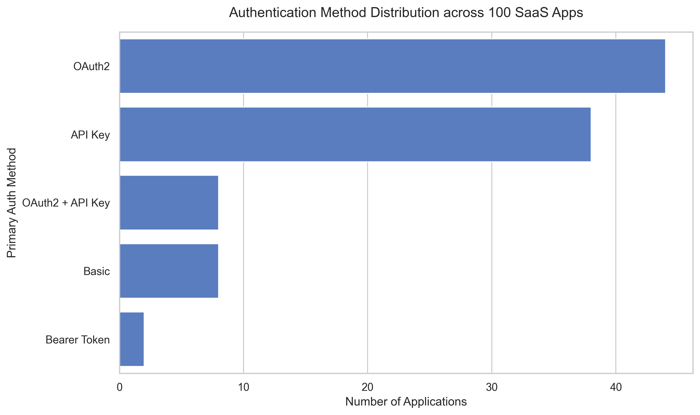
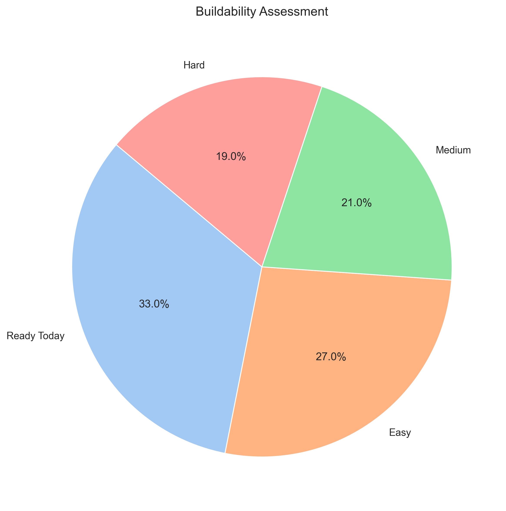
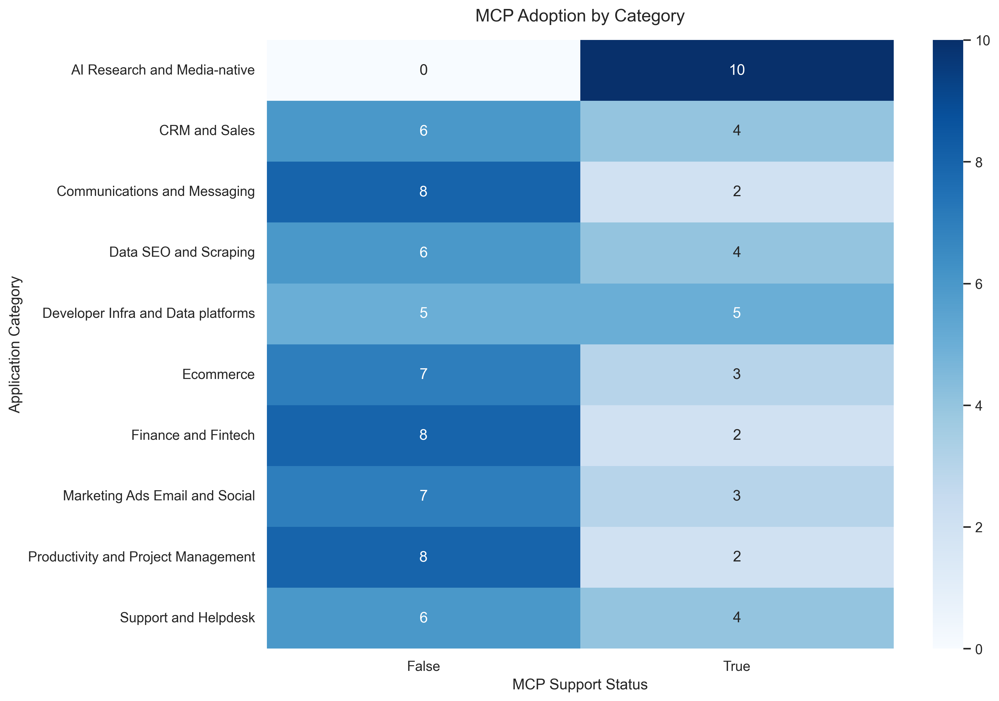

Automated Research, Verification, & Analysis of 100 SaaS Applications.
Applications Researched
Average Confidence
Time to Insights
Composio integrates with hundreds of tools. Before building an integration, we must research its authentication mechanisms, API surface, partner requirements, and buildability. Doing this manually for 100+ applications is unscalable, error-prone, and slow.
An autonomous dual-agent architecture. A Research Agent scrapes developer docs and extracts structured data. A completely independent Verification Agent re-reads the evidence and scores confidence. Finally, an Analytics Engine generates product insights.
Scrapes developer portals, parses documentation, and leverages LLM Structured Outputs to enforce Pydantic schemas.
Instead of hallucinating, every extracted field is mapped to an exact, valid URL from the official documentation.
A second LLM runs with Zero-Temperature. It checks domain authority, cross-references sources, and calculates confidence scores.
Pandas cross-tabulations dynamically discover integration patterns. Priority scores determine what to build next.
Visualising the SaaS integration landscape.



Filter and search the complete list of researched applications.
| Application | Category | Auth Method | API Type | Buildability | Confidence |
|---|